Processus phonologiques
Objectifs du chapitre
- Décrire un phonème comme un faisceau de traits distinctifs
- Distinguer traits de sonorité, catégoriels, de lieu et de manière, et utiliser l’échelle de sonorité
- Reconnaître et nommer les principaux processus phonologiques : assimilation (progressive, régressive), harmonie, coalescence, épenthèse, élision, métathèse
- Formuler une règle phonologique avec la notation A → B / C _ D et les traits
- Expliquer l’assimilation du voisement en français et le rôle des frontières de mots (#) et de morphèmes (+)
- Distinguer variantes combinatoires et phonèmes (le cas de [j] et [j̥])
- Expliquer le dévoisement final, l’allongement vocalique et la contrainte du voisement automatique, et ce qu’ils révèlent du français de Belgique
5.1 Les traits
Possible de décomposer ce son en différentes propriétés/caractéristiques articulatoires
« traits » articulatoires
phonème = abréviation pour matrice de traits complète
/d/: [+ dental; + occlusive; + sonore]
/t/ : [+ dental; + occlusive; - sonore]
5.2 Les traits distinctifs
5.2.1 Qu’est-ce qu’un trait distinctif ?
- Un phonème = un faisceau de traits binaires (+/–) qui le distingue de tous les autres phonèmes de la langue (Chomsky & Halle 1968)
- /d/ est [+voix], /t/ est [–voix]
- Les traits correspondent en gros aux propriétés articulatoires, mais
- certaines distinctions sont simplifiées
- certains traits nouveaux sont introduits pour décrire des classes de phonèmes : [±sonorant], [±approximant]
5.2.2 Quatre types de traits
- Traits de sonorité (laryngaux) : [±voix]
- Traits catégoriels : [±vocalique], [±sonorant], [±approximant]
- Traits de lieu : [±labial], [±dental], [±palatal], [±vélaire], [±uvulaire]
- Traits de manière : [±continuant], [±nasal], [±latéral]
5.2.3 Les traits catégoriels
- [±vocalique] : voyelles [+] vs consonnes et glides [–]
- [±sonorant] : la consonne facilite la vibration des plis vocaux
- [+] : nasales /m, n, ɲ, ŋ/ et liquides /l, r/ (et toutes les voyelles et glides)
- [–] : occlusives et fricatives (obstruantes)
- [±approximant] : l’air passe librement par la bouche
- [+] : liquides /l, r/ (et glides, voyelles)
- [–] : toutes les autres consonnes
Tous les phonèmes [+sonorant] sont aussi [+voix], sauf en contexte d’assimilation.
5.2.4 L’échelle de sonorité
voyelles > glides > liquides > nasales > occlusives et fricatives
| Classe | Obstacle | sonorant | approximant |
|---|---|---|---|
| Glides | minimal, l’air passe sans problème | + | + |
| Liquides | obstacle, mais l’air passe (p. ex. sur les côtés) | + | + |
| Nasales | obstacle buccal, l’air passe par le nez | + | – |
| Occlusives, fricatives | obstacle sérieux qui gêne le passage de l’air | – | – |
Un processus qui touche les nasales et les glides touche aussi les liquides ; l’inverse n’est pas vrai (p. ex. le dévoisement après une sourde touche glides et liquides, pas les nasales).
5.2.5 Les traits de lieu et de manière
Lieu
| Phonétique | Phonologie |
|---|---|
| bilabiales | [+labial] |
| labiodentales | [+labial] |
| dentales | [+dental] |
| alvéolaires | [+dental] |
| palato-alvéolaires | [+palatal] |
| palatales | [+palatal] |
| vélaires | [+vélaire] |
| uvulaires | [+uvulaire] |
/f/ = [+labial, –dental, –palatal, –vélaire, –uvulaire]
Manière
- [±continuant] : obstacle partiel [+] (fricatives, liquides) vs complet [–] (occlusives, nasales)
- [±nasal] : l’air sort par le nez [+] ou par la bouche [–]
- [±latéral] : l’air passe sur les côtés de la langue [+] (/l/ seulement)
5.2.6 Tableau synthétique
| p | t | k | b | d | ɡ | f | s | ʃ | v | z | ʒ | m | n | ɲ | ŋ | l | r | |
|---|---|---|---|---|---|---|---|---|---|---|---|---|---|---|---|---|---|---|
| [vocalique] | – | – | – | – | – | – | – | – | – | – | – | – | – | – | – | – | – | – |
| [approximant] | – | – | – | – | – | – | – | – | – | – | – | – | – | – | – | – | + | + |
| [sonorant] | – | – | – | – | – | – | – | – | – | – | – | – | + | + | + | + | + | + |
| [voix] | – | – | – | + | + | + | – | – | – | + | + | + | + | + | + | + | + | + |
| [continuant] | – | – | – | – | – | – | + | + | + | + | + | + | – | – | – | – | + | + |
| [nasal] | – | – | – | – | – | – | – | – | – | – | – | – | + | + | + | + | – | – |
| [latéral] | – | – | – | – | – | – | – | – | – | – | – | – | – | – | – | – | + | – |
| [labial] | + | – | – | + | – | – | + | – | – | + | – | – | + | – | – | – | – | – |
| [dental] | – | + | – | – | + | – | – | + | – | – | + | – | – | + | – | – | + | – |
| [palatal] | – | – | – | – | – | – | – | – | + | – | – | + | – | – | + | – | – | – |
| [vélaire] | – | – | + | – | – | + | – | – | – | – | – | – | – | – | – | + | – | – |
| [uvulaire] | – | – | – | – | – | – | – | – | – | – | – | – | – | – | – | – | – | + |
5.2.7 Traits équipollents et privatifs
- Traits équipollents : les deux valeurs définissent chacune un groupe homogène
- [±sonorant] : sonantes vs obstruantes
- Traits privatifs : seule la valeur positive définit un groupe homogène ; la valeur négative regroupe des phonèmes hétérogènes
- [±latéral] : /l/ vs tout le reste
5.2.8 Questions (1/3) : généralisations
Tous les phonèmes [+approximant] (/l/, /r/) sont aussi [+sonorant], mais l’inverse n’est pas vrai (/m/ est [+sonorant, –approximant]). Formulez deux autres généralisations à partir du tableau synthétique.
Comparez deux lignes du tableau, par exemple [nasal] et [sonorant], ou [sonorant] et [voix] : quand une ligne a « + », que vaut toujours l’autre ? Et l’inverse est-il vrai ?
- Tous les [+nasal] sont [+sonorant], mais pas l’inverse (/l/ est [+sonorant, –nasal]).
- Tous les [+sonorant] sont [+voix], mais pas l’inverse (/b/ est [+voix, –sonorant]).
- Tous les [+latéral] sont [+approximant], mais pas l’inverse (/r/ est [+approximant, –latéral]).
5.2.9 Questions (3/3) : traits partagés
Indiquez les traits partagés par :
- les fricatives
- les nasales et les liquides
- les consonnes sourdes
- Fricatives : [–vocalique, –sonorant, –approximant, +continuant, –nasal, –latéral]
- Nasales et liquides : [–vocalique, +sonorant, +voix]
- Consonnes sourdes : [–vocalique, –sonorant, –approximant, –voix, –nasal, –latéral]
5.3 Altérations
Six types d’altérations, illustrés par des exemples de différentes langues :
- assimilations (progressives et régressives)
- harmonie
- coalescence
- épenthèse
- élision
- métathèse
5.3.1 Assimilations progressives : « assembler à bord d’un bateau » en oowekyala 🪶
Phonologie /q’atu-χs/
| q’ | a | t | u | χ | s | |
|---|---|---|---|---|---|---|
| cons | + | − | + | − | + | + |
| arrondi | − | − | − | + | − | − |
| lieu | uvulaire | — | alvéolaire | — | uvulaire | alvéolaire |
Quel trait change entre la forme phonologique et la forme phonétique ?
Phonétique [q’atu-χʷs]
| q’ | a | t | u | χʷ | s | |
|---|---|---|---|---|---|---|
| cons | + | − | + | − | + | + |
| arrondi | − | − | − | + | + | − |
| lieu | uvulaire | — | alvéolaire | — | uvulaire | alvéolaire |
5.3.1.1 Assimilations progressives : « faire du petit bois » en oowekyala 🪶
Phonologie /ʔamastu-gila/
| ʔ | a | m | a | s | t | u | g | i | l | a | |
|---|---|---|---|---|---|---|---|---|---|---|---|
| cons | + | − | + | − | + | + | − | + | − | + | − |
| arrondi | − | − | − | − | − | − | + | − | − | − | − |
| lieu | glottale | — | bilabiale | — | alvéolaire | alvéolaire | — | vélaire | — | alvéolaire | — |
Quel trait change entre la forme phonologique et la forme phonétique ?
Phonétique [ʔamastu-gʷila]
| ʔ | a | m | a | s | t | u | gʷ | i | l | a | |
|---|---|---|---|---|---|---|---|---|---|---|---|
| cons | + | − | + | − | + | + | − | + | − | + | − |
| arrondi | − | − | − | − | − | − | + | + | − | − | − |
| lieu | glottale | — | bilabiale | — | alvéolaire | alvéolaire | — | vélaire | — | alvéolaire | — |
5.3.2 Assimilations régressives : con Pedro en espagnol 🇪🇸
Phonologie /kon pedro/
| k | o | n | p | e | d | r | o | |
|---|---|---|---|---|---|---|---|---|
| cons | + | − | + | + | − | + | + | − |
| nasal | − | − | + | − | − | − | − | − |
| voisé | − | + | + | − | + | + | + | + |
| lieu | vélaire | — | alvéolaire | bilabiale | — | alvéolaire | alvéolaire | — |
Quel trait change entre la forme phonologique et la forme phonétique ?
Phonétique [kom ˈpeðɾo]
| k | o | m | p | e | ð | ɾ | o | |
|---|---|---|---|---|---|---|---|---|
| cons | + | − | + | + | − | + | + | − |
| nasal | − | − | + | − | − | − | − | − |
| voisé | − | + | + | − | + | + | + | + |
| lieu | vélaire | — | bilabiale | bilabiale | — | alvéolaire | alvéolaire | — |
5.3.2.1 Assimilations régressives : con Diego en espagnol 🇪🇸
Phonologie /kon diego/
| k | o | n | d | i | e | g | o | |
|---|---|---|---|---|---|---|---|---|
| cons | + | − | + | + | − | − | + | − |
| nasal | − | − | + | − | − | − | − | − |
| voisé | − | + | + | + | + | + | + | + |
| lieu | vélaire | — | alvéolaire | alvéolaire | — | — | vélaire | — |
Quel trait change entre la forme phonologique et la forme phonétique ?
Phonétique [kon ˈdjeɣo]
| k | o | n | d | j | e | ɣ | o | |
|---|---|---|---|---|---|---|---|---|
| cons | + | − | + | + | − | − | + | − |
| nasal | − | − | + | − | − | − | − | − |
| voisé | − | + | + | + | + | + | + | + |
| lieu | vélaire | — | alvéolaire | alvéolaire | — | — | vélaire | — |
5.3.2.2 Assimilations régressives : con Carlos en espagnol 🇪🇸
Phonologie /kon karlos/
| k | o | n | k | a | r | l | o | s | |
|---|---|---|---|---|---|---|---|---|---|
| cons | + | − | + | + | − | + | + | − | + |
| nasal | − | − | + | − | − | − | − | − | − |
| voisé | − | + | + | − | + | + | + | + | − |
| lieu | vélaire | — | alvéolaire | vélaire | — | alvéolaire | alvéolaire | — | alvéolaire |
Quel trait change entre la forme phonologique et la forme phonétique ?
Phonétique [koŋ ˈkaɾlos]
| k | o | ŋ | k | a | ɾ | l | o | s | |
|---|---|---|---|---|---|---|---|---|---|
| cons | + | − | + | + | − | + | + | − | + |
| nasal | − | − | + | − | − | − | − | − | − |
| voisé | − | + | + | − | + | + | + | + | − |
| lieu | vélaire | — | vélaire | vélaire | — | alvéolaire | alvéolaire | — | alvéolaire |
5.3.3 Harmonie : « supervision » en malais 🇲🇾
Phonologie /pəŋawasan/
| p | ə | ŋ | a | w | a | s | a | n | |
|---|---|---|---|---|---|---|---|---|---|
| cons | + | − | + | − | − | − | + | − | + |
| son | − | + | + | + | + | + | − | + | + |
| nasal | − | − | + | − | − | − | − | − | + |
Quel trait change entre la forme phonologique et la forme phonétique ?
Phonétique [pəŋãw̃ãsan]
| p | ə | ŋ | ã | w̃ | ã | s | a | n | |
|---|---|---|---|---|---|---|---|---|---|
| cons | + | − | + | − | − | − | + | − | + |
| son | − | + | + | + | + | + | − | + | + |
| nasal | − | − | + | + | + | + | − | − | + |
5.3.3.1 Harmonie : « faire pleurer » en malais 🇲🇾
Phonologie /məratappi/
| m | ə | r | a | t | a | p | p | i | |
|---|---|---|---|---|---|---|---|---|---|
| cons | + | − | + | − | + | − | + | + | − |
| son | + | + | + | + | − | + | − | − | + |
| nasal | + | − | − | − | − | − | − | − | − |
Quel trait change entre la forme phonologique et la forme phonétique ?
Phonétique [mə̃ratappi]
| m | ə̃ | r | a | t | a | p | p | i | |
|---|---|---|---|---|---|---|---|---|---|
| cons | + | − | + | − | + | − | + | + | − |
| son | + | + | + | + | − | + | − | − | + |
| nasal | + | + | − | − | − | − | − | − | − |
5.3.4 Coalescence : wa + inkosi → [wenkosi] « des chefs »
Phonologie /wa + inkosi/
| w | a | i | n | k | o | s | i | |
|---|---|---|---|---|---|---|---|---|
| haut | — | − | + | — | — | − | — | + |
| bas | — | + | − | — | — | − | — | − |
| arrière | — | + | − | — | — | + | — | − |
| arrondi | — | − | − | — | — | + | — | − |
Quel trait change entre la forme phonologique et la forme phonétique ?
Phonétique [wenkosi]
| w | e | n | k | o | s | i | |
|---|---|---|---|---|---|---|---|
| haut | — | − | — | — | − | — | + |
| bas | — | − | — | — | − | — | − |
| arrière | — | − | — | — | + | — | − |
| arrondi | — | − | — | — | + | — | − |
5.3.4.1 Coalescence : wa + umfazi → [womfazi] « de la femme »
Phonologie /wa + umfazi/
| w | a | u | m | f | a | z | i | |
|---|---|---|---|---|---|---|---|---|
| haut | — | − | + | — | — | − | — | + |
| bas | — | + | − | — | — | + | — | − |
| arrière | — | + | + | — | — | + | — | − |
| arrondi | — | − | + | — | — | − | — | − |
Quel trait change entre la forme phonologique et la forme phonétique ?
Phonétique [womfazi]
| w | o | m | f | a | z | i | |
|---|---|---|---|---|---|---|---|
| haut | — | − | — | — | − | — | + |
| bas | — | − | — | — | + | — | − |
| arrière | — | + | — | — | + | — | − |
| arrondi | — | + | — | — | − | — | − |
5.3.5 Épenthèse : « le village » en basque 🌊
Phonologie /erri + e/
| e | r | r | i | ∅ | e | |
|---|---|---|---|---|---|---|
| cons | − | + | + | − | − | |
| syll | + | − | − | + | + | |
| haut | − | — | — | + | − | |
| arrière | − | — | — | − | − |
Quel trait change entre la forme phonologique et la forme phonétique ?
Phonétique [erri je]
| e | r | r | i | j | e | |
|---|---|---|---|---|---|---|
| cons | − | + | + | − | − | − |
| syll | + | − | − | + | − | + |
| haut | − | — | — | + | + | − |
| arrière | − | — | — | − | − | − |
5.3.5.1 Épenthèse : « le fil » en basque 🌊
Phonologie /ari + e/
| a | r | i | ∅ | e | |
|---|---|---|---|---|---|
| cons | − | + | − | − | |
| syll | + | − | + | + | |
| haut | − | — | + | − | |
| arrière | + | — | − | − |
Quel trait change entre la forme phonologique et la forme phonétique ?
Phonétique [ari je]
| a | r | i | j | e | |
|---|---|---|---|---|---|
| cons | − | + | − | − | − |
| syll | + | − | + | − | + |
| haut | − | — | + | + | − |
| arrière | + | — | − | − | − |
5.3.6 Élision : L’ami 🇫🇷
Phonologie /lə ami/
| l | ə | a | m | i | |
|---|---|---|---|---|---|
| cons | + | − | − | + | − |
| syll | − | + | + | − | + |
Quel trait change entre la forme phonologique et la forme phonétique ?
Phonétique [lami]
| l | ∅ | a | m | i | |
|---|---|---|---|---|---|
| cons | + | ∅ | − | + | − |
| syll | − | ∅ | + | − | + |
5.3.6.1 Élision : « tigre » en wallonie 🐓
Phonologie /tigʁ/
| t | i | g | ʁ | |
|---|---|---|---|---|
| cons | + | − | + | + |
| son | − | + | − | + |
| voisé | − | + | + | + |
Quel trait change entre la forme phonologique et la forme phonétique ?
Phonétique [tig̊ʰ]
| t | i | g̊ʰ | ∅ | |
|---|---|---|---|---|
| cons | + | − | + | ∅ |
| son | − | + | − | ∅ |
| voisé | − | + | − | ∅ |
5.3.7 Métathèse : « index » en leti (Malaysie) 🇲🇾
Phonologie /ukar ppalu/
| u | k | a | r | p | p | a | l | u | |
|---|---|---|---|---|---|---|---|---|---|
| cons | − | + | − | + | + | + | − | + | − |
| syll | + | − | + | − | − | − | + | − | + |
Quel trait change entre la forme phonologique et la forme phonétique ?
Phonétique [ukra ppalu]
| u | k | r | a | p | p | a | l | u | |
|---|---|---|---|---|---|---|---|---|---|
| cons | − | + | + | − | + | + | − | + | − |
| syll | + | − | − | + | − | − | + | − | + |
5.3.7.1 Métathèse : « demander » en anglais (Californie du sud) 🏖️
Phonologie /æsk/
| æ | s | k | |
|---|---|---|---|
| cons | − | + | + |
| cont | + | + | − |
| lieu | — | alvéolaire | vélaire |
Quel trait change entre la forme phonologique et la forme phonétique ?
Phonétique [æks]
| æ | k | s | |
|---|---|---|---|
| cons | − | + | + |
| cont | + | − | + |
| lieu | — | vélaire | alvéolaire |
5.4 Quelques altérations en français
1. Transcrivez en orthographe traditionnelle les énoncés suivants.
- [œ̃ sak̬ də sabl]
- [lə kap̬ blɑ̃]
- [yn pat̬ də ʃa]
- [sə vaz̥ kase]
- [la pʁ̥ɛs]
- [la pɔʁ̥ tetʁ̥wat]
1. un sac de sable · 2. le cap blanc · 3. une patte de chat · 4. ce vase cassé · 5. la presse · 6. la porte étroite
2. Qu’observez-vous respectivement dans les énoncés 1 à 3 et 4 à 6 ?
- Les énoncés 1 à 3 présentent le diacritique ̬ (voisement).
- Les énoncés 4 à 6 présentent le diacritique ̥ (dévoisement).
5.4.1 Quelques altérations en français : explication
3. Expliquez l’utilisation de ces diacritiques à partir des processus phonologiques décrits précédemment.
- [œ̃ sak̬ də sabl] : assimilation régressive du voisement
- [lə kap̬ blɑ̃] : assimilation régressive du voisement
- [yn pat̬ də ʃa] : assimilation régressive du voisement
- [sə vaz̥ kase] : assimilation régressive du voisement
- [la pʁ̥ɛs] : assimilation régressive du voisement
- [la pɔʁ̥ tetʁ̥wat] : assimilation régressive [pɔʁ̥t] et progressive [etʁ̥wat] du voisement
5.4.2 Assimilations en français
Mettez votre main sur votre larynx et ressentez les vibrations de vos plis vocaux lors de la prononciation de “bien” et de “pied”.
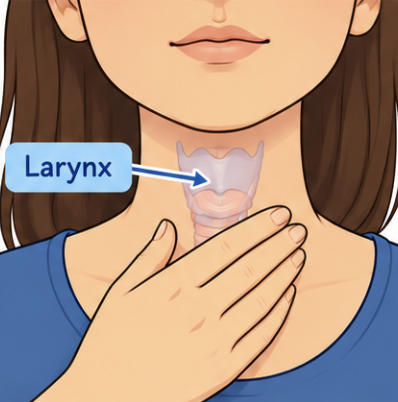
5.4.2.1 Quel est le statut de [j] et de [j̥] ?
| Variante | Contexte ? | Exemples |
|---|---|---|
| [j] sonore | ??? | hier [jɛʁ], hiérarchie [jeʁaʁʃi], yod [jɔd], iode [jɔd], ion [jɔ̃], ionien [jɔnjɛ̃], hiatus [jatys], hyacinthe [jasɛ̃t], iambe [jɑ̃b], famille [famij], béquille [bekij], nouilles [nuj], andouille [ɑ̃duj], groseilles [ɡʁozɛj], oeil [œj], deuil [dœj], ail [aj], mien [mjɛ̃], arménien [aʁmenjɛ̃], bien [bjɛ̃], canadien [kanadjɛ̃], viens [vjɛ̃], arlésien [aʁlezjɛ̃], collégien [kɔleʒjɛ̃], lien [ljɛ̃], aïeul [ajœl], renvoyer [ʁɑ̃vwaje], païen [pajɛ̃], cahier [kaje], citoyen [sitwajɛ̃], trier [tʁije], tablier [tablije] |
| [j̥] sourd | ??? | pied [pj̥e], tiers [tj̥ɛʁ], iraquien [iʁakj̥ɛ̃], fier [fj̥ɛʁ], sien [sj̥ɛ̃], chien [ʃj̥ɛ̃], chantier [ʃɑ̃tj̥e], assiette [asj̥ɛt], chiasme [kj̥asm] |
Dans quels contextes trouve-t-on [j] et [j̥] ? Quel est leur statut ?
5.4.2.2 Un indice
Un indice
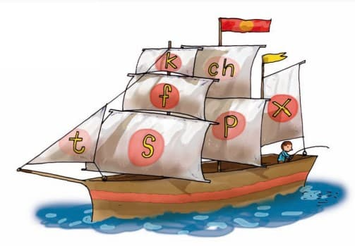
5.4.2.3 Statut de [j] et de [j̥] : réponse
| Variante | Contexte ? | Exemples |
|---|---|---|
| [j] sonore | initiale, devant voyelle ; finale, après voyelle ; après /m n b d v z ʒ l ʁ/, devant voyelle ; intervocalique | hier [jɛʁ], hiérarchie [jeʁaʁʃi], yod [jɔd], iode [jɔd], ion [jɔ̃], ionien [jɔnjɛ̃], hiatus [jatys], hyacinthe [jasɛ̃t], iambe [jɑ̃b], famille [famij], béquille [bekij], nouilles [nuj], andouille [ɑ̃duj], groseilles [ɡʁozɛj], oeil [œj], deuil [dœj], ail [aj], mien [mjɛ̃], arménien [aʁmenjɛ̃], bien [bjɛ̃], canadien [kanadjɛ̃], viens [vjɛ̃], arlésien [aʁlezjɛ̃], collégien [kɔleʒjɛ̃], lien [ljɛ̃], aïeul [ajœl], renvoyer [ʁɑ̃vwaje], païen [pajɛ̃], cahier [kaje], citoyen [sitwajɛ̃], trier [tʁije], tablier [tablije] |
| [j̥] sourd | après /p t k f s ʃ/, devant voyelle | pied [pj̥e], tiers [tj̥ɛʁ], iraquien [iʁakj̥ɛ̃], fier [fj̥ɛʁ], sien [sj̥ɛ̃], chien [ʃj̥ɛ̃], chantier [ʃɑ̃tj̥e], assiette [asj̥ɛt], chiasme [kj̥asm] |
[j] et [j̥] sont en distribution complémentaire : ce sont deux variantes combinatoires (allophones) du même phonème /j/ 🔎.
5.4.2.4 Le rôle de la structure morphologique
- Le domaine d’application des règles phonologiques peut dépendre de la structure morpho-syntaxique de l’énoncé. Dans la tradition générative, les frontières de mots sont indiquées par # et les frontières morphémiques par +.
- L’énoncé suivant « copiez la carte » peut donc être transcrit comme # kɔpi + e # la # kaʀt #
5.4.2.5 Assimilation du voisement et frontières de mots
Observez les exemples suivants et essayez de déterminer le rôle de la structure morphologique.
- f : chef de gare [ʃɛf̬ də gaːʀ]
- s : grosse dame [gʀos̬ dam]
- ʃ : vache du Québec [vaʃ dy kebɛk] (avec le son [ʃ] sonorisé)
- p : pipe de plâtre [pip̬ də platʀ̥]
- t : je vais te garder [ʒvɛ t̬ gaʀde]
- k : sac de sable [sak̬ də sabl]
- ʀ : gare ton auto [gaʀ̥ tɔ̃ noto]
- v : brève concurrence [bʀɛv̥ kɔ̃kyʀɑ̃ːs]
- z : rose foncé [ʀoz̥ fɔ̃se]
- ʒ : je travaille [ʒ tʀ̥avaj]
- b : robe sale [ʀɔb̥ sal]
- d : chapeau de paille [ʃapo d̥ paj]
Quelles règles pouvez-vous en déduire ?
- [-son] → [-voix] / _ # [-voix, -son]
- [-son] → [+voix] / _ # [+voix, -son]
- [ʀ] → [+voix] / C[-voix, -son] _
5.4.2.6 Que nous apprend la phonologie de laboratoire ?
Le voisement tardif s’explique par les propriétés physiologiques et acoustiques de l’appareil phonatoire : la mise en vibration des cordes vocales demande un certain temps.
- Voisement phonologique : distinction binaire entre plosives sourdes (/p, t, k/) et voisées (/b, d, g/), présente dans des langues comme l’anglais et le français.
- Voisement phonétique : manifestations acoustiques, perceptuelles et vibratoires (VOT, vibration des cordes vocales), utilisées différemment selon les langues pour exprimer ces catégories.
- Français : implémentation de type « français » (voisement négatif pour les occlusives « voisées »).
- Anglais : implémentation avec aspiration pour les sourdes ([pʰ, tʰ, kʰ]) et dévoisement partiel pour les voisées.
5.4.2.7 Implémentation du voisement et assimilation
- Les plosives [+voix] déclenchent une assimilation régressive du voisement (RVA) uniquement dans les langues employant l’implémentation de type « français » (VOT négatif).
- Exemples de dialectes germaniques concernés : l’afrikaans, le néerlandais (occidental et méridional), l’anglais écossais, le frison occidental, l’allemand de Rhénanie et le yiddish (variétés orientales).
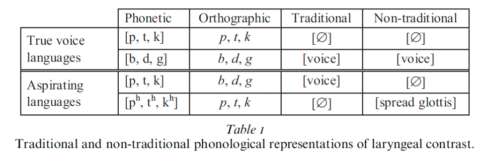
5.4.2.8 Partition articulatoire (phonologie de laboratoire)
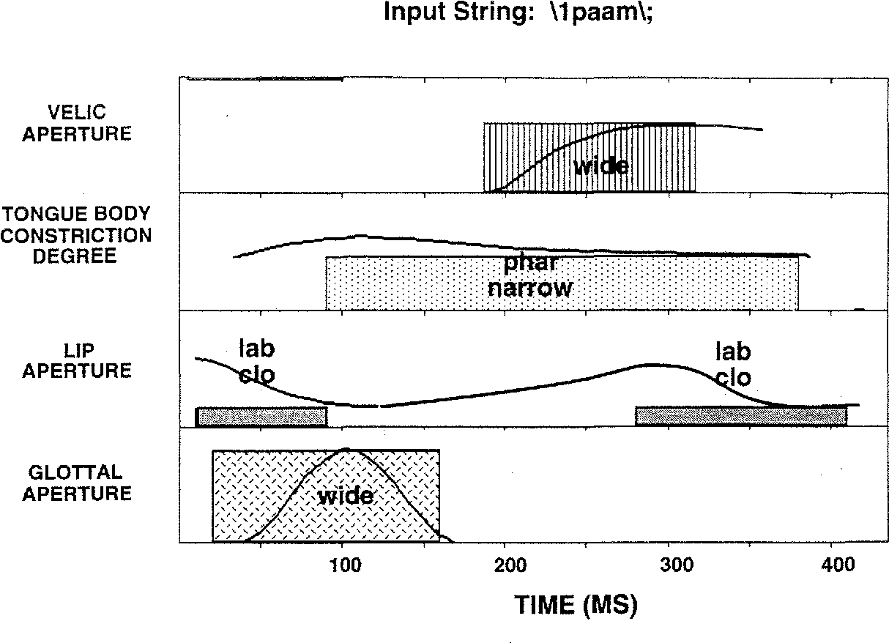
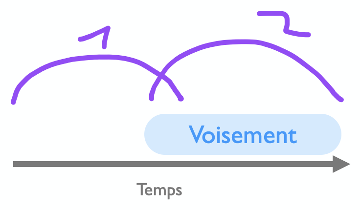
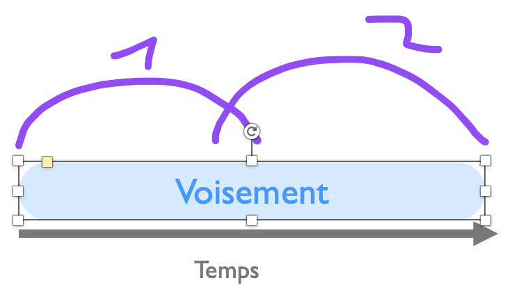
5.4.2.9 Assimilation catégorique ou graduelle ?
- L’assimilation du voisement en français est traditionnellement considérée comme un phénomène catégorique (« tout ou rien ») et principalement régressif : la consonne suivante influence la consonne précédente.
- Des études récentes en français et dans d’autres langues (par ex. le hongrois) remettent en cause cette vision : l’assimilation du voisement serait plutôt un phénomène graduel, avec différents degrés de variation phonétique.
- Cette approche s’inscrit dans une conception plus générale des processus d’assimilation comme des phénomènes continus plutôt que strictement discrets.
5.4.2.10 Une étude sur corpus
- Plus de 100 heures de parole issues de journaux radiophoniques et télévisés : environ 100 000 séquences consonantiques de type C1#C2.
- Quatre configurations de contact consonantique :
- [-voix]#[+voix] : favorable à l’assimilation du voisement
- [+voix]#[-voix] : favorable à l’assimilation du voisement
- [-voix]#[-voix]
- [+voix]#[+voix]
Mesure
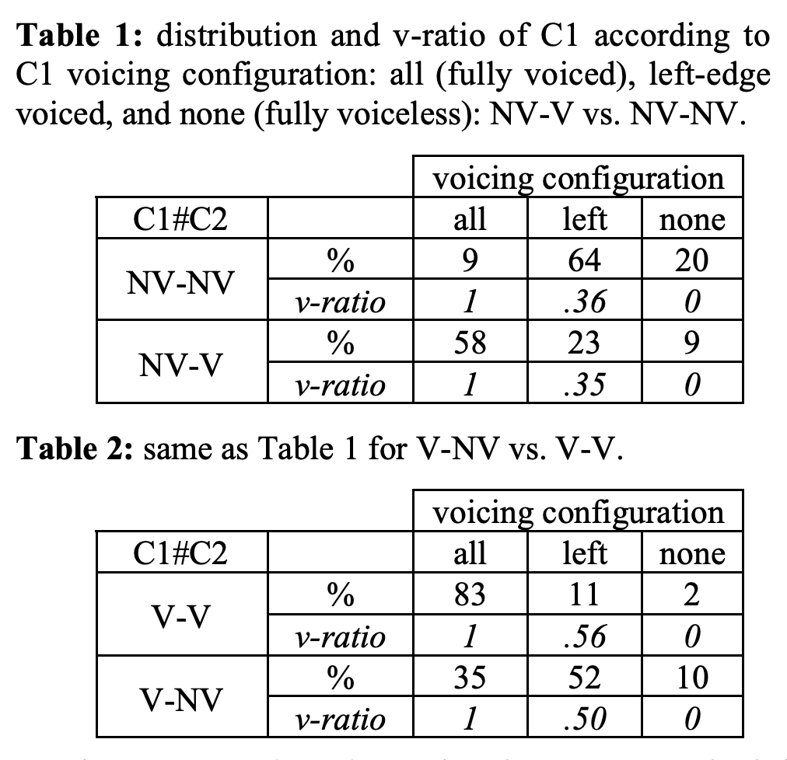
5.4.2.11 Une étude sur corpus : résultats
À votre avis, l’assimilation du voisement est-elle plutôt catégorique ou graduelle ? Est-ce la même chose pour les occlusives et les fricatives ?
Le plus souvent catégorique plutôt que partielle : les consonnes tendent à adopter pleinement la valeur de voisement de la consonne voisine. Cette tendance varie selon le type de consonne :
- les occlusives présentent une assimilation vers [-voisé] (désonorisation) relativement catégorique ;
- les fricatives montrent une désonorisation plus graduelle et moins systématique.
5.4.3 Dévoisement final
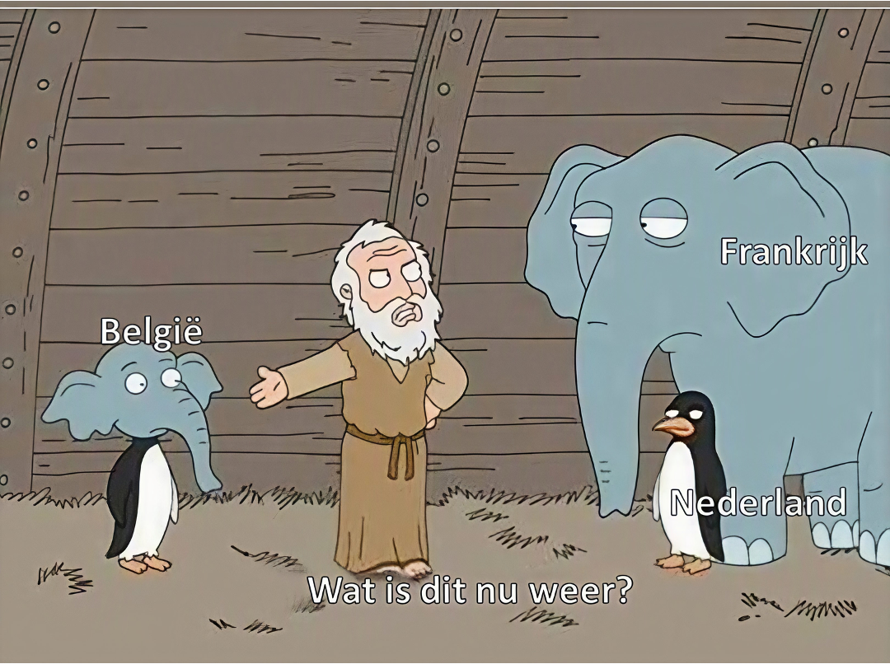
5.4.3.1 Dévoisement final : observation
- rouge /ʁuʒ/ [ʁuːʃ]
- ligue /lig/ [liːk]
- brave /bʁav/ [bʁaːf]
- bague /bag/ [baːk]
- Liège /ljɛʒ/ [ljɛːʃ]
- douze /duz/ [duːs]
1. Comparez la forme phonologique et la forme phonétique : que devient l’obstruante finale ?
Elle se dévoise : /ʒ/ → [ʃ], /g/ → [k], /v/ → [f], /z/ → [s].
2. Que remarquez-vous sur la voyelle précédente ?
Elle est allongée (voyelles soulignées).
3. Le dévoisement se limite-t-il à la finale absolue ?
Non : on le trouve aussi en coda syllabique. Il tombe encore /il tɔ̃b ɑ̃kɔʁ/ [il tɔ̃ːp ɑ̃kɔʀ̥]
5.4.3.2 Dévoisement final : illustration
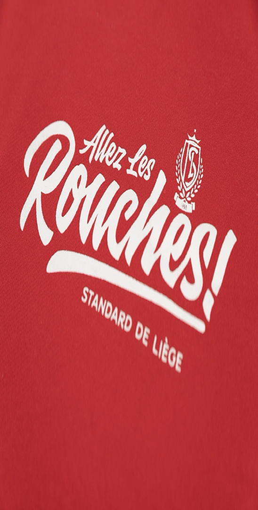
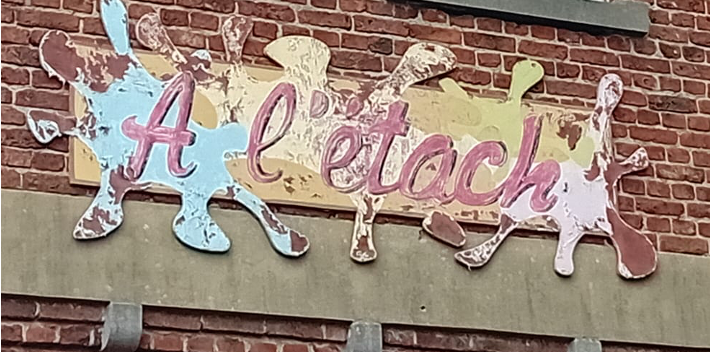
5.4.3.3 La contrainte du voisement automatique (AVC)
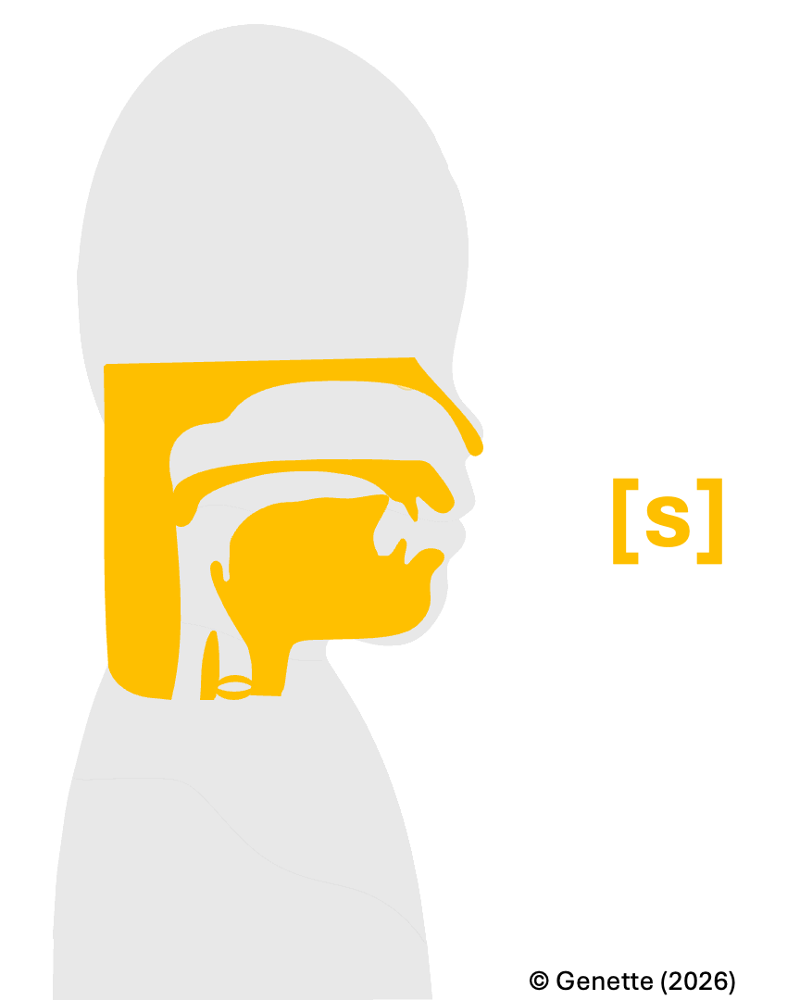
- « Voicing requires a sufficient airflow through the adducted vocal cords » (Ohala, 2011)
- Δp < Psupra − Psub
- « Among obstruents there will be a greater tendency for fricatives to be voiceless than stops » (Ohala, 2011)
5.4.3.4 Contourner l’AVC
- Pour contourner l’AVC, on peut raccourcir la fricative voisée et/ou allonger la voyelle précédente :
- longue fricative voisée = courte voyelle précédente
- courte fricative voisée = longue voyelle précédente
Quid du français de Belgique ?
5.4.3.5 Français de France et français de Belgique
- Le français de France 🇫🇷 est a priori une variété dont le voisement phonologique se manifeste principalement à travers le voisement phonétique.
- Le français de Belgique 🇧🇪 : le dévoisement final est attesté ; un allongement de la voyelle précédente est également attesté.
Le français belge compense-t-il le faible poids d’un indice acoustique en encodant le voisement phonologique « sous-jacent » à travers l’indice de durée vocalique ?
5.4.3.6 Français de France et français de Belgique : résultats
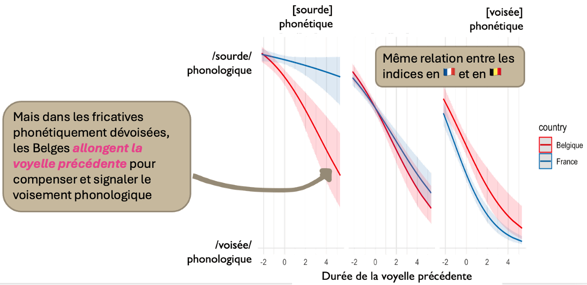
5.4.3.7 Et donc ?
- Le voisement en France : principalement par le voisement de la fricative.
- Le voisement en Belgique : en cas de dévoisement final, la longueur vocalique est encodée dans le système phonologique pour compenser le dévoisement.
Nord vs Sud ? Un continuum ?